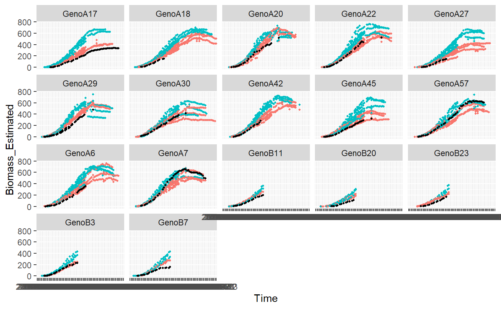

Phenoarch platform - Cleaning procedure - Curve level using SpATS
I.Sanchez
août 25, 2020
detectOutlierCurves.RmdObjective
This vignette deals with the detection of outlier plants in a lattice experiment using a spatial model using splines (SpATS library) [3]. Here the following steps of this procedure developed for Maize experiment but easily adaptable to others species:
- From a temporal dataset designed as plant1 with biomass (or biovolume) and plant height phenotypes. Extract predictions of these two phenotypes at a specific time point (for example just before the treatment) and create a dataset designed as plant4. Here, we will use the biomass and plant height predicted at 24 days at 20°C.
- From a temporal dataset of count of number of leaves, extract the phyllocron (slope of linear regression for each plant)
We so have a dataset with one row for each plant in the experiment containing the three phenotypes: biomass24, PH24 and Phy.
- Apply a SpATS model on each phenotype, check the diagnostic graphics and retrieve the deviance residuals calculated by the model.
On the residuals, we can detect outlier plant(s) with a combined physiological criterion applying the following rules:
-
raw procedure: at a threshold=0.95 (can be modified)
- small plants are identified if \(res_i < \mu_{res} - qnorm(threshold) \times sd_{res}\) for biomass AND phyllocron
- big plants are identified if \(res_i > \mu_{res} + qnorm(threshold) \times sd_{res}\) for biomass AND plant height
Use the FuncDetectOutlierPlanMaize() and plotDetectOutlierPlantMaize() functions to do the previous steps.
Import of data
In this vignette, we use a toy data set of the openSilexStatR library (anonymized real data set).
This data set was obtained from an experiment of maize performed in the Phenoarch greenhouse composed of a conveyor belt structure of 28 lanes carrying 60 carts with one pot each (i.e. 1680 pots) (Cabrera-Bosquet et al. 2016). The data contains one experiment with 90 genotypes (Genotype) from two genotypic panels (Population) and two water scenarios (Treatment): well watered (WW) and water deficit (WD).
The leaf area and the biomass of individual plants are estimated from images taken in 13 directions. Briefly, pixels extracted from RGB images are converted into biomass and leaf area using linear models derived from regression of data from multiple side view images and destructive measurements performed at different phenological stages, from 5 to 14 appeared leaves (i.e. from 15 to 50 days at 20°C after emergence). Time courses of biomass (Biomass_Estimated) and leaf area (LA_Estimated) are expressed as a function of thermal time (TT). The height of each plants (Height_Estimated) is also estimated from the pictures. The number of visible leaves (count_leaf) is counted at least once a week on each plant. To prevent errors in leaf counting, leaves 5 and 10 of each plant are marked soon after appearance. The phyllocron is calculated as the slope of the linear regression bewtween the number of leaves and the thermal time at 2017-04-27 day, before the beginning of the water deficit. The unique ID of the plant is recorded (plantId), together with the pot position in row (Row) and in column (Col).
## 'data.frame': 55799 obs. of 13 variables:
## $ Time : Factor w/ 72 levels "2017-04-13","2017-04-14",..: 2 3 4 5 6 7 8 9 10 11 ...
## $ plantId : Factor w/ 1671 levels "01_01","01_02",..: 1 1 1 1 1 1 1 1 1 1 ...
## $ Genotype : Factor w/ 90 levels "GenoA1","GenoA10",..: 39 39 39 39 39 39 39 39 39 39 ...
## $ Treatment : Factor w/ 2 levels "WD","WW": 1 1 1 1 1 1 1 1 1 1 ...
## $ Population : Factor w/ 2 levels "Panel1","Panel2": 1 1 1 1 1 1 1 1 1 1 ...
## $ Row : int 1 1 1 1 1 1 1 1 1 1 ...
## $ Col : int 1 1 1 1 1 1 1 1 1 1 ...
## $ Biomass_Estimated: num NA NA NA NA 1.85 ...
## $ LA_Estimated : num 0.00398 0.00555 0.00742 0.01089 0.01299 ...
## $ Height_Estimated : num 120 173 242 266 249 ...
## $ count_leaf : num 4.2 NA NA NA NA 6.2 NA NA NA NA ...
## $ phyllocron : num NA NA NA NA NA NA NA NA NA NA ...
## $ TT : int 104 NA NA NA NA 109 NA NA NA NA ...SpATS library
Detection of outliers
test<-FuncDetectOutlierPlantMaize(datain=mydata,dateBeforeTrt="2017-04-27",
param1="Biomass_Estimated",param2="Height_Estimated",
param3="phyllocron",paramGeno="Genotype",
paramCol="Col",paramRow="Row",
threshold=0.95,nCol=28,nRow=60,genotype.as.random=FALSE,
timeColumn = "Time")The FuncDetectOutlierPlantMaize() returns a list of 6 elements :
- outputDataframe: a dataframe with the used data set, the fitted values and residuals calculated by the models, the plants flagged as outlier
- smallOutlier: a data.frame of the small plants detected as outliers
- bigOutlier: a data.frame of the big plants detected as outliers
- m1: A list of the SpATS results for param1
- m2: A list of the SpATS results for param2
- m3: A list of the SpATS results for param3

Dataset highlighting the outlier plants
## Time plantId Genotype Treatment Population Position Line
## 1 2017-04-27 05_03 GenoA6 WW Panel1 3 5
## 2 2017-04-27 06_57 GenoA57 WW Panel1 57 6
## 3 2017-04-27 07_02 GenoB7 WD Panel2 2 7
## 4 2017-04-27 07_18 GenoB11 WD Panel2 18 7
## 5 2017-04-27 09_57 GenoB3 WD Panel2 57 9
## 6 2017-04-27 12_50 GenoA30 WD Panel1 50 12
## 7 2017-04-27 13_28 GenoA27 WD Panel1 28 13
## 8 2017-04-27 13_30 GenoA42 WD Panel1 30 13
## 9 2017-04-27 14_36 GenoA17 WW Panel1 36 14
## 10 2017-04-27 17_49 GenoB20 WD Panel2 49 17
## 11 2017-04-27 18_15 GenoA22 WW Panel1 15 18
## 12 2017-04-27 18_41 GenoA20 WW Panel1 41 18
## 13 2017-04-27 21_43 GenoA18 WD Panel1 43 21
## 14 2017-04-27 22_56 GenoA7 WW Panel1 56 22
## 15 2017-04-27 25_42 GenoA29 WW Panel1 42 25
## 16 2017-04-27 27_48 GenoB23 WW Panel2 48 27
## 17 2017-04-27 28_01 GenoA45 WD Panel1 1 28
## 18 2017-04-27 28_37 GenoA29 WD Panel1 37 28
## Biomass_Estimated LA_Estimated Height_Estimated count_leaf phyllocron TT R
## 1 19.053046 0.04054923 496.8150 NA 0.2866803 NA 5
## 2 26.710540 0.04348831 682.7700 NA 0.3491393 NA 6
## 3 31.545385 0.05775239 597.6300 NA 0.2395393 NA 7
## 4 23.917150 0.04065245 476.4375 NA 0.2637236 NA 7
## 5 44.095749 0.06336016 506.3025 NA 0.2977607 NA 9
## 6 41.800552 0.06643003 694.5675 NA 0.2981148 NA 12
## 7 9.439104 0.02706301 575.1075 NA 0.2605263 NA 13
## 8 29.777812 0.04720002 741.7988 NA 0.2596730 NA 13
## 9 6.538781 0.02208032 481.1400 NA 0.2058197 NA 14
## 10 2.735184 0.02487973 478.2113 NA 0.2364853 NA 17
## 11 40.809394 0.05455394 733.8375 NA 0.3296840 NA 18
## 12 38.077743 0.05350347 567.1463 NA 0.3233634 NA 18
## 13 29.502695 0.04313317 525.4425 NA 0.2540708 NA 21
## 14 49.972882 0.07000937 736.8900 NA 0.3138175 NA 22
## 15 28.169621 0.04284785 492.7725 NA 0.3175074 NA 25
## 16 12.484720 0.03674674 551.2650 NA 0.2558459 NA 27
## 17 21.620858 0.04142434 651.7500 NA 0.3087944 NA 28
## 18 33.709486 0.05006771 502.4250 NA 0.2940863 NA 28
## C devResP1 devResP2 devResP3 fittedP1 fittedP2 fittedP3
## 1 3 -24.65652 -252.051084 -0.03212489 43.70957 748.8661 0.3188052
## 2 57 -21.68928 58.741134 -0.03576921 48.39982 624.0289 0.3849086
## 3 2 -15.53607 36.153866 -0.04149007 47.08145 561.4761 0.2810294
## 4 18 -12.41711 -57.000785 -0.03814611 36.33426 533.4383 0.3018697
## 5 57 -15.65752 10.851758 -0.02536935 59.75327 495.4507 0.3231301
## 6 50 -13.64368 18.574363 -0.02539854 55.44423 675.9931 0.3235133
## 7 28 -14.22699 -49.386121 -0.03700164 23.66609 624.4936 0.2975280
## 8 30 -14.61140 21.019183 -0.03084497 44.38921 720.7796 0.2905180
## 9 36 -14.94456 -124.456121 -0.06904976 21.48334 605.5961 0.2748694
## 10 49 -10.63955 -196.665692 -0.02631130 13.37473 674.8769 0.2627966
## 11 15 -17.47116 -1.654703 -0.03217222 58.28055 735.4922 0.3618562
## 12 41 -13.12194 -23.986932 -0.02567852 51.19968 591.1332 0.3490420
## 13 43 -22.76087 -82.890463 -0.04273011 52.26356 608.3330 0.2968009
## 14 56 -12.65982 -21.910579 -0.02585889 62.63271 758.8006 0.3396764
## 15 42 -20.10408 -117.653029 -0.03311315 48.27370 610.4255 0.3506206
## 16 48 -18.03684 -100.787582 -0.03660976 30.52156 652.0526 0.2924556
## 17 1 -16.82632 -14.777683 -0.02389344 38.44717 666.5277 0.3326879
## 18 37 -14.21707 -93.058262 -0.02837121 47.92656 595.4833 0.3224575
## mean.devP1 sd.devP1 mean.devP2 sd.devP2 mean.devP3 sd.devP3
## 1 1.240996e-14 6.413921 -1.621669e-13 44.29345 3.794596e-16 0.01446087
## 2 1.240996e-14 6.413921 -1.621669e-13 44.29345 3.794596e-16 0.01446087
## 3 1.240996e-14 6.413921 -1.621669e-13 44.29345 3.794596e-16 0.01446087
## 4 1.240996e-14 6.413921 -1.621669e-13 44.29345 3.794596e-16 0.01446087
## 5 1.240996e-14 6.413921 -1.621669e-13 44.29345 3.794596e-16 0.01446087
## 6 1.240996e-14 6.413921 -1.621669e-13 44.29345 3.794596e-16 0.01446087
## 7 1.240996e-14 6.413921 -1.621669e-13 44.29345 3.794596e-16 0.01446087
## 8 1.240996e-14 6.413921 -1.621669e-13 44.29345 3.794596e-16 0.01446087
## 9 1.240996e-14 6.413921 -1.621669e-13 44.29345 3.794596e-16 0.01446087
## 10 1.240996e-14 6.413921 -1.621669e-13 44.29345 3.794596e-16 0.01446087
## 11 1.240996e-14 6.413921 -1.621669e-13 44.29345 3.794596e-16 0.01446087
## 12 1.240996e-14 6.413921 -1.621669e-13 44.29345 3.794596e-16 0.01446087
## 13 1.240996e-14 6.413921 -1.621669e-13 44.29345 3.794596e-16 0.01446087
## 14 1.240996e-14 6.413921 -1.621669e-13 44.29345 3.794596e-16 0.01446087
## 15 1.240996e-14 6.413921 -1.621669e-13 44.29345 3.794596e-16 0.01446087
## 16 1.240996e-14 6.413921 -1.621669e-13 44.29345 3.794596e-16 0.01446087
## 17 1.240996e-14 6.413921 -1.621669e-13 44.29345 3.794596e-16 0.01446087
## 18 1.240996e-14 6.413921 -1.621669e-13 44.29345 3.794596e-16 0.01446087
## lower.devP1 lower.devP2 lower.devP3 upper.devP1 upper.devP2 upper.devP3
## 1 -10.54996 -72.85624 -0.02378602 10.54996 72.85624 0.02378602
## 2 -10.54996 -72.85624 -0.02378602 10.54996 72.85624 0.02378602
## 3 -10.54996 -72.85624 -0.02378602 10.54996 72.85624 0.02378602
## 4 -10.54996 -72.85624 -0.02378602 10.54996 72.85624 0.02378602
## 5 -10.54996 -72.85624 -0.02378602 10.54996 72.85624 0.02378602
## 6 -10.54996 -72.85624 -0.02378602 10.54996 72.85624 0.02378602
## 7 -10.54996 -72.85624 -0.02378602 10.54996 72.85624 0.02378602
## 8 -10.54996 -72.85624 -0.02378602 10.54996 72.85624 0.02378602
## 9 -10.54996 -72.85624 -0.02378602 10.54996 72.85624 0.02378602
## 10 -10.54996 -72.85624 -0.02378602 10.54996 72.85624 0.02378602
## 11 -10.54996 -72.85624 -0.02378602 10.54996 72.85624 0.02378602
## 12 -10.54996 -72.85624 -0.02378602 10.54996 72.85624 0.02378602
## 13 -10.54996 -72.85624 -0.02378602 10.54996 72.85624 0.02378602
## 14 -10.54996 -72.85624 -0.02378602 10.54996 72.85624 0.02378602
## 15 -10.54996 -72.85624 -0.02378602 10.54996 72.85624 0.02378602
## 16 -10.54996 -72.85624 -0.02378602 10.54996 72.85624 0.02378602
## 17 -10.54996 -72.85624 -0.02378602 10.54996 72.85624 0.02378602
## 18 -10.54996 -72.85624 -0.02378602 10.54996 72.85624 0.02378602
## lower.spatsP1 lower.spatsP2 lower.spatsP3 upper.spatsP1 upper.spatsP2
## 1 0 0 0 1 1
## 2 0 1 0 1 1
## 3 0 1 0 1 1
## 4 0 1 0 1 1
## 5 0 1 0 1 1
## 6 0 1 0 1 1
## 7 0 1 0 1 1
## 8 0 1 0 1 1
## 9 0 0 0 1 1
## 10 0 0 0 1 1
## 11 0 1 0 1 1
## 12 0 1 0 1 1
## 13 0 0 0 1 1
## 14 0 1 0 1 1
## 15 0 0 0 1 1
## 16 0 0 0 1 1
## 17 0 1 0 1 1
## 18 0 0 0 1 1
## upper.spatsP3 flagLowerSpats flagUpperSpats
## 1 1 0 1
## 2 1 0 1
## 3 1 0 1
## 4 1 0 1
## 5 1 0 1
## 6 1 0 1
## 7 1 0 1
## 8 1 0 1
## 9 1 0 1
## 10 1 0 1
## 11 1 0 1
## 12 1 0 1
## 13 1 0 1
## 14 1 0 1
## 15 1 0 1
## 16 1 0 1
## 17 1 0 1
## 18 1 0 1## Time plantId Genotype Treatment Population Position Line
## 1 2017-04-27 07_55 GenoB3 WW Panel2 55 7
## 2 2017-04-27 11_29 GenoA36 WW Panel1 29 11
## 3 2017-04-27 17_17 GenoB24 WW Panel2 17 17
## Biomass_Estimated LA_Estimated Height_Estimated count_leaf phyllocron TT R
## 1 71.41276 0.09273917 569.7450 NA 0.3697377 NA 7
## 2 36.67895 0.06258974 704.2200 NA 0.3088115 NA 11
## 3 58.48472 0.07994443 769.4362 NA 0.3232828 NA 17
## C devResP1 devResP2 devResP3 fittedP1 fittedP2 fittedP3 mean.devP1
## 1 55 13.80518 76.96394 0.03304748 57.60759 492.7811 0.3366902 1.240996e-14
## 2 29 12.46516 78.23241 0.01048244 24.21379 625.9876 0.2983290 1.240996e-14
## 3 17 22.03344 73.26826 0.03389641 36.45128 696.1680 0.2893864 1.240996e-14
## sd.devP1 mean.devP2 sd.devP2 mean.devP3 sd.devP3 lower.devP1
## 1 6.413921 -1.621669e-13 44.29345 3.794596e-16 0.01446087 -10.54996
## 2 6.413921 -1.621669e-13 44.29345 3.794596e-16 0.01446087 -10.54996
## 3 6.413921 -1.621669e-13 44.29345 3.794596e-16 0.01446087 -10.54996
## lower.devP2 lower.devP3 upper.devP1 upper.devP2 upper.devP3 lower.spatsP1
## 1 -72.85624 -0.02378602 10.54996 72.85624 0.02378602 1
## 2 -72.85624 -0.02378602 10.54996 72.85624 0.02378602 1
## 3 -72.85624 -0.02378602 10.54996 72.85624 0.02378602 1
## lower.spatsP2 lower.spatsP3 upper.spatsP1 upper.spatsP2 upper.spatsP3
## 1 1 1 0 0 0
## 2 1 1 0 0 1
## 3 1 1 0 0 0
## flagLowerSpats flagUpperSpats
## 1 1 0
## 2 1 0
## 3 1 0The user can save the residuals and detected outliers in an output file, using write.table() function.
Plots
plotDetectOutlierPlantMaize(datain=PAdata,
outmodels=test$smallOutlier,
x="Time",
y="Biomass_Estimated",
genotype="Genotype",
idColor="Treatment",
idFill="plantId")## Warning: Removed 1968 rows containing missing values (geom_point).## Warning: Removed 122 rows containing missing values (geom_point).
plotDetectOutlierPlantMaize(datain=PAdata,
outmodels=test$bigOutlier,
x="Time",
y="Biomass_Estimated",
genotype="Genotype",
idColor="Treatment",
idFill="plantId")## Warning: Removed 280 rows containing missing values (geom_point).## Warning: Removed 16 rows containing missing values (geom_point).
Session info
## R version 3.6.3 (2020-02-29)
## Platform: x86_64-pc-linux-gnu (64-bit)
## Running under: Ubuntu 16.04.7 LTS
##
## Matrix products: default
## BLAS: /usr/lib/libblas/libblas.so.3.6.0
## LAPACK: /usr/lib/lapack/liblapack.so.3.6.0
##
## locale:
## [1] LC_CTYPE=fr_FR.UTF-8 LC_NUMERIC=C
## [3] LC_TIME=fr_FR.UTF-8 LC_COLLATE=fr_FR.UTF-8
## [5] LC_MONETARY=fr_FR.UTF-8 LC_MESSAGES=fr_FR.UTF-8
## [7] LC_PAPER=fr_FR.UTF-8 LC_NAME=C
## [9] LC_ADDRESS=C LC_TELEPHONE=C
## [11] LC_MEASUREMENT=fr_FR.UTF-8 LC_IDENTIFICATION=C
##
## attached base packages:
## [1] stats graphics grDevices utils datasets methods base
##
## other attached packages:
## [1] ggplot2_3.2.1 openSilexStatR_1.0.0 tidyr_1.0.0
## [4] dplyr_0.8.3
##
## loaded via a namespace (and not attached):
## [1] maps_3.3.0 splines_3.6.3 dotCall64_1.0-0 gtools_3.8.1
## [5] shiny_1.4.0 assertthat_0.2.1 expm_0.999-4 CARBayesdata_2.1
## [9] sp_1.3-2 stats4_3.6.3 LearnBayes_2.15.1 yaml_2.2.0
## [13] truncdist_1.0-2 pillar_1.4.3 backports_1.1.5 lattice_0.20-38
## [17] glue_1.3.1 digest_0.6.23 promises_1.1.0 colorspace_1.4-1
## [21] Matrix_1.2-17 htmltools_0.4.0 httpuv_1.5.2 pkgconfig_2.0.3
## [25] CARBayesST_3.0.1 gmodels_2.18.1 purrr_0.3.3 xtable_1.8-4
## [29] scales_1.1.0 gdata_2.18.0 later_1.0.0 tibble_2.1.3
## [33] farver_2.0.1 withr_2.1.2 lazyeval_0.2.2 magrittr_1.5
## [37] crayon_1.3.4 mime_0.8 deldir_0.1-23 memoise_1.1.0
## [41] evaluate_0.14 fs_1.3.1 nlme_3.1-140 MASS_7.3-51.4
## [45] xml2_1.2.0 foreign_0.8-71 truncnorm_1.0-8 class_7.3-15
## [49] data.table_1.12.6 tools_3.6.3 shapefiles_0.7 lifecycle_0.1.0
## [53] matrixStats_0.55.0 stringr_1.4.0 munsell_0.5.0 compiler_3.6.3
## [57] pkgdown_1.3.0 e1071_1.7-2 evd_2.3-3 rlang_0.4.2
## [61] classInt_0.4-2 units_0.6-5 grid_3.6.3 rstudioapi_0.10
## [65] htmlwidgets_1.5.1 spam_2.4-0 crosstalk_1.0.0 labeling_0.3
## [69] rmarkdown_2.3 SpATS_1.0-10 boot_1.3-23 testthat_2.3.0
## [73] gtable_0.3.0 DBI_1.0.0 roxygen2_6.1.1 R6_2.4.1
## [77] lubridate_1.7.4 knitr_1.26 rgdal_1.4-7 fastmap_1.0.1
## [81] zeallot_0.1.0 commonmark_1.7 rprojroot_1.3-2 spdep_1.1-3
## [85] KernSmooth_2.23-15 desc_1.2.0 matrixcalc_1.0-3 stringi_1.4.3
## [89] Rcpp_1.0.3 fields_10.0 vctrs_0.2.1 sf_0.8-0
## [93] leaflet_2.0.2 spData_0.3.2 tidyselect_0.2.5 xfun_0.11
## [97] coda_0.19-3References
- R Development Core Team (2015). R: A language and environment for statistical computing. R Foundation for Statistical Computing, Vienna, Austria. ISBN 3-900051-07-0, URL http://www.R-project.org.
- Maria Xose Rodriguez-Alvarez, Martin P. Boer, Fred A. van Eeuwijk, Paul H.C. Eilers (2017). Correcting for spatial heterogeneity in plant breeding experiments with P-splines. Spatial Statistics URL https://doi.org/10.1016/j.spasta.2017.10.003
- Alvarez Prado, S., Sanchez, I., Cabrera Bosquet, L., Grau, A., Welcker, C., Tardieu, F., Hilgert, N. (2019). To clean or not to clean phenotypic datasets for outlier plants in genetic analyses?. Journal of Experimental Botany, 70 (15), 3693-3698. , DOI : 10.1093/jxb/erz191 https://prodinra.inra.fr/record/481355